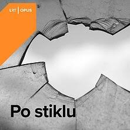

Naujienos |
Naujienų archyvas |
|---|---|
1 Naujienos pavadinimas su nuotrauka |
2 Naujienos pavadinimas su video |
|

Palyginimui D.Kolomyckis teigė, kad už vieną pamainą filme aktorius gauna apie 300 eurų: „Žinoma, nusiskaičiuoja mokesčiai. Visgi dažniausiai menininkas turi galimybę dirbti iki 5 pamainų, todėl susidaro solidi suma, iš kurios gali gyventi visą mėnesį. Bet reikia suvokti ir kitą pusę – filmuose lietuvių aktoriai vaidina ne taip dažnai (vieną vaidmenį per metus arba dvejus), nes režisieriai nenori imti tų pačių menininkų. Taigi padalinus tą sumą per metus adekvatus atlyginimas vis tiek nesusidaro. Todėl reikia griauti mitus, kad čia slypi kažkokie turtai.“ „Viešumoje manoma, kad aktoriai pozuoja ant žurnalų viršelių, vaidina serialuose ir šiaip, drįsčiau teigti, kad, būdami vieši asmenys, atliepia intelektualinius visuomenės poreikius. Bet įsigilinus į realybę – jie gauna apgailėtinus (nebijau šio žodžio vieną vaidmenį per metus arba dvejus), nes režisieriai nenori imti tų pačių menininkų. Taigi padalinus tą sumą per metus adekvatus atlyginimas vis tiek nesusidaro. Todėl reikia griauti mitus, kad čia slypi kažkokie turtai.“ |
|
| Daugiau | Daugiau |
3 Naujienos pavadinimas kur tik tekstas |
4 Naujienos pavadinimas kai tekstas aplink nuotrauka |
|
„Viešumoje manoma, kad aktoriai pozuoja ant žurnalų viršelių, vaidina serialuose ir šiaip, drįsčiau teigti, kad, būdami vieši asmenys, atliepia intelektualinius visuomenės poreikius. Bet įsigilinus į realybę – jie gauna apgailėtinus (nebijau šio žodžio) atlyginimus, – sakė D.Kolomyckis. – Tačiau išgirdus, kad žmogus, nors ir nevaidino pagrindinio vaidmens, gavo 17 eurų, nes ilgą laiką repetavo, dalyvavo spektaklyje ir netgi todėl, kad atėjo tą rytą... Tai yra mažiau negu valandinis atlyginimas. Vien žiūrovas už bilietą sumoka 15 eurų. Priklauso nuo kiekvieno aktoriaus užimtumo, tačiau per mėnesį spektaklių tiek daug nesusidaro. Atlyginimai yra juokingi.“ Paklaustas apie tai, ar Lietuvoje aktorių atlyginimai yra adekvatūs, A.Liuga pateikė asmeninį pavyzdį: „Esu pakviestas Lietuvos muzikos ir teatro akademijoje dėstyti teorinį kursą teatrologams ir režisieriams. Aš turiu ilgą profesinį stažą ir esu pakankamai savo profesinėje srityje žinomas Lietuvoje žmogus. Visgi už vieną, 2,5 val. trukmės, paskaitą akademija pasiūlo iki 50 eurų ir nesidera. Žinoma, aš galiu nesutikti. Tuo metu studentas, dar nebaigęs akademijos, už pasirodymą masinėje scenoje gauna 40 eurų. Štai jums ir atsakymas, ar šis atlyginimas adekvatus, ar ne.“ |

Jo nuomone, ši situacija įdomi, nes Jaunimo teatras priklauso valstybei, o nepriklausomuose teatruose tokio lygmens dar nebuvo girdėjęs: „Nepriklausomuose teatruose dirbantys irgi gauna mažai, tačiau juose taip pat dažniausiai mokama nuo 50 iki 100 eurų. Taip, čia galima kelti klausimą, kad kultūrai valstybiniu lygmeniu yra skiriama per mažai pinigų. Taigi teatrai bando taupyti, deja, aktorių sąskaita. Taigi tas komentaras „jeigu nenori, surasime kitą aktorių“ iš režisierių arba teatro vadovų yra toks gajus ir labai žeminantis. Tokį požiūrį reikia stabdyti. Tai yra tiesiog elementarių darbo sąlygų pažeidimas. Juolab kad aktorius geriau už mažą atlyginimą, bet vis tiek eis dirbti, nes kito kelio nėra.“ |
| Daugiau | Daugiau |
Artimiausi renginiai |
Visi renginiai |
|
|---|---|---|
|
||
| Registruotis į renginį |
Nuotraukų galerija |
Archyvas |
|
|---|---|---|
| rodyklė | rodyklė |